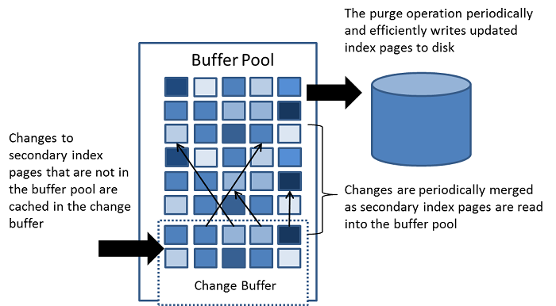
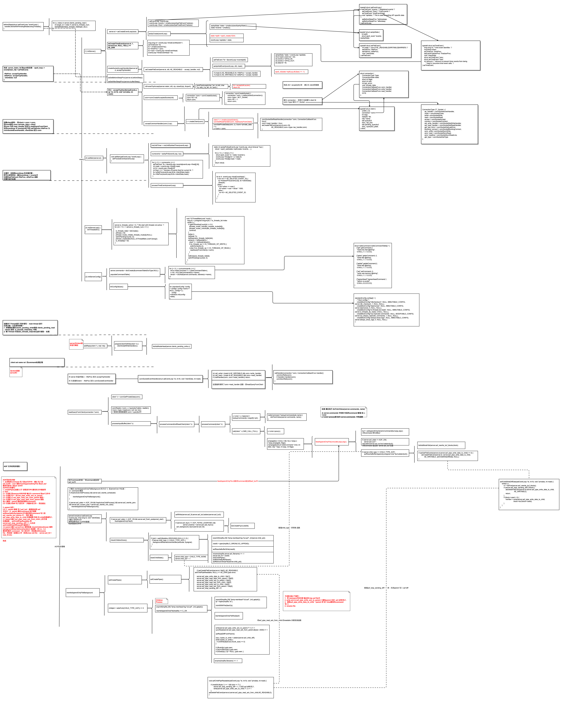

rust 编码模式
June 30, 2021
设计模式
- Design Patterns: 是在编写软件时解决常见问题的方法。
- Anti-patterns: 反模式是解决这些相同常见问题的方法。 然而，虽然设计模式给我们带来了好处，但反模式却带来了更多的问题。
- idioms(惯用方法): 是编码时要遵循的准则。 它们是社区的社会规范。 你可以打破它们，但如果你这样做了，你应该有一个很好的理由。
示例：
- 使用 borrowed type 作为 参数（为参数提供灵活）， 例如： &str 替换 &String...
现代操作系统 内存篇
May 25, 2021
内存管理
因为： 不管存储器多大，程序都可以将其填满。
所以： 分层存储器体系： 在这个体系中，存在 MB 的快速、昂贵、易失性的高速缓存，GB的速度价格适中的同样易失的内存 ，以及 TB的低速、廉价、非易失的磁盘存储。
操作系统的工作之一 就是 将层次存储系统体系 抽象成为一个 有用的模型 并管理这个抽象。
分层存储器系统称为 存储管理系统： 他的任务是 有效的管理内存，即记录哪些 内存是正在使用的，哪些 是空闲的， 在进程需要时候为其分配内存 ，不需要时释放内存。
探...
现代操作系统
May 24, 2021
现代操作系统：
抽象是管理复杂性的关键， 好的抽象可以把一个 不可能管理的任务 分为 两个可管理的部件。 抽象的定义和实现 + 用这些抽象解决的问题。
操作系统的任务 就是 创建好的抽象 并实现和管理它所创建的抽象对象。抽象内容是理解操作系统的关键。
作为资源管理者的操作系统：
资源管理包括 以下两种不同方式实现 多路复用（共享）资源：时间上 复用 + 空间上复用 。
-
时间复用 例子 比如 打印机， 问题： 如何决定下一个执行哪个任务？ 以及 任务运行的时间
...
Rust Async
May 09, 2021
并发模型
- OS threads: 1) 不需要改变代码编码模式 2) 线程间 同步困难 3) 性能开销比较大， 线程池 可以一定程度上减少这些开销， 但是并不能够支撑起 庞大的IO 工作
- 事件驱动模型(Event-driven)： 结合callback, 性能非常好，但是 导致 非线性的控制流， Data flow and error propagation is often hard to follow.
- 协程(coroutines)： like thread， 不需...
Mysql
April 11, 2021
Mysql Relearn
内存模型：

- Change BUffer： 缓存 不在Buffer pool 中的 索引页的变动， 变动 可能由 insert update， delete 等操作 导致， 将在以后 页面 被加载到 Buffer pool时 被合并
- [image]
- 不同于 聚簇索引， 普通的索引 通常是不唯一的，索引 的插入 删除 更新 通常是 random 的， 随后 将 change Buffer 的合并到 Buffer pool（当...
Redis Client conection
February 21, 2021
Redis 建立链接过程

Rust little book
February 20, 2021
Rust little book
rustup: rust complier 的管理工具， 可以方便的切换 stable, beta, and nightly
cargo 是rust的包管理工具， 用来 下载 rust的依赖， 编译， 以及 分发 到 crates.io
- 在安装 rust 之后， cargo 也会被自动安装上
- cargo 提供了一些有用的工具有:
- cargo new package # default –bin 生成 可执行 program...
link compile
February 19, 2021
link & compile
为什么c语言中的 header file *.h 一定需要 防止重复被include 呢？ 而为什么一定需要 header file的存在呢？
- header file 需要存在原因有： 1） .c 文件 变为可执行文件，需要 编译、链接 两个阶段， 而链接中 是可以将 不同的 类型编译过的文件进行 链接的。 随着程序的复杂， 比如 函数参数的 传递顺序等 原因导致，需要 程序调用者 知道 函数调用的结构， 所以 [[https://www.zhihu.com...
java shell docker
September 15, 2020
A Little Book on Java 的总结
Basic
- 编译 与 运行
编译: javac First.java 产生一个 First.class 文件
运行：java First 将运行 编译之后 First.class- java 编译器 将 源代码 中的每个 class 转变为 对应的 class file 并存储 其 字节码
- 有 main 函数的 class才能够运行，一个项目中存在多个class 有 main 函数 是为了 将 项...
finace
March 19, 2020
入门
三张表： 资产负债表、利润表、现金流量表， 每张表分别存在 合并报表 和母公司报表
- 上市公司本部的经营情况: 母公司资产负债表、母公司利润表、母公司现金流量表，加上母公司所有者权益变动表
- 合并报表: 并不是一个真实存在的法律实体. 它合并了上市公司本部经营及其控制的子公司、孙公司经营情况。合并时，会抵销这些母子公司、子孙公司之间的投资、交易和债权债务。
- 财报中其他用到“母公司”一词时，指的是上市公司的控股股东，因为财报是上市公司说的话。
- 由于子公司、孙公司是企业经营...
Page 1 of 8